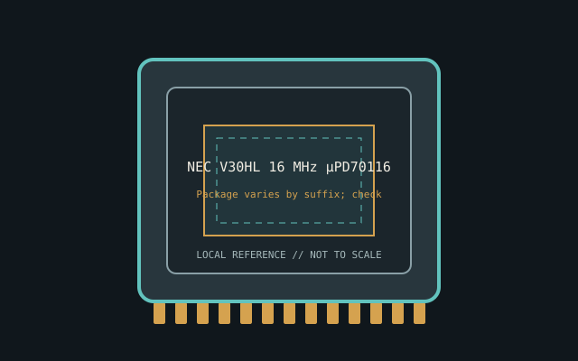

[ INDIVIDUAL CPU COMPONENT ]
NEC V30HL 16 MHz μPD70116H
16-bit 8086-compatible V-series CPU, 16 MHz, 16-bit external data path. Model-specific record; confirm the complete part marking before installation.

IDENTIFICATION: NEC V30HL 16 MHz μPD70116H. Product name alone does not establish package, stepping, voltage or firmware compatibility.
Verified model specifications
| Catalog path | Other → NEC processors |
|---|---|
| Model and compute | 16-bit 8086-compatible V-series CPU, 16 MHz, 16-bit external data path |
| Package / socket | Package varies by suffix; check drawing |
| Compatibility | 8086 bus with timing/software compatibility; confirm pinout |
| Stepping and variants | V30HL differs from V20HL/V30; full code/package matter |
Compatibility and service
- 8086 bus with timing/software compatibility; confirm pinout
- V30HL differs from V20HL/V30; full code/package matter
- Record full code/BIOS; test original bus timing
- Confirm board manual, exact CPU support list, firmware, voltage/power, memory and cooling before use; never force a package.
Service & archival notes
Record full code/BIOS; test original bus timing
Photograph package, markings, contacts and date/lot codes before repair. Log host board, BIOS/microcode, memory, cooler, condition, provenance and source revision.
Sources & further reading
- NEC μPD70116H / V30HL datasheetArchived manuals; check full package suffix.
- NEC μPD70116H model recordIndependent cross-reference.
Manufacturer documents take precedence. Family-level references may not resolve every stepping; verify the marking and motherboard CPU list.